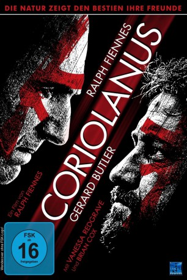

 
 IMDB-Wertung: 6.2 / 10
IMDB-Wertung: 6.2 / 10  Tomatometer: 92
Tomatometer: 92  Metascore:
Metascore: 
Der Film basiert auf dem gleichnamigen Drama Shakespeares, verlegt aber die Handlung aus der Römerzeit in das 21. Jahrhundert. --- Der Patrizier Coriolanus, zunächst als Kriegsheld gefeiert, zieht sich mit seiner Arroganz den Unmut der Massen zu. Als er aus der Heimat verbannt wird, wendet er sich aus Rache gegen sein eigenes Volk. In seiner Wut und Verzweiflung verbündet Coriolanus sich mit Tullus Aufidius, jenem Mann, den er einst besiegt hatte. Gemeinsam planen die Männer den Angriff auf Rom, und wollen die Römer für jede Ungerechtigkeit, die ihnen angetan wurde, bezahlen lassen.
Jahr: 2011
Dauer: 122 Minuten
FSK: 16
Land: England Studio: KSM FilmTonspuren: DTS - ,
Untertitel:
Auflösung: 1080p (1920x816) Größe: 9236 MB
Regisseur:  Ralph Fiennes
Ralph Fiennes
Drehbuch: Tomàs Aragay
Soundtrack:
Darsteller:
 Gerard Butler als Tullus Aufidius
Gerard Butler als Tullus Aufidius Ralph Fiennes als Caius Martius Coriolanus
Ralph Fiennes als Caius Martius Coriolanus Lubna Azabal als First Citizen, Tamora
Lubna Azabal als First Citizen, Tamora Ashraf Barhom als Second Citizen, Cassius
Ashraf Barhom als Second Citizen, Cassius Brian Cox als Menenius
Brian Cox als Menenius John Kani als General Cominius
John Kani als General Cominius Dragan Micanovic als Titus Lartius
Dragan Micanovic als Titus Lartius Jessica Chastain als Virgilia
Jessica Chastain als Virgilia Vanessa Redgrave als Volumnia
Vanessa Redgrave als Volumnia Paul Jesson als Tribune Brutus
Paul Jesson als Tribune Brutus James Nesbitt als Tribune Sicinius
James Nesbitt als Tribune Sicinius Nikki Amuka-Bird als TV Pundit
Nikki Amuka-Bird als TV Pundit David Yelland als TV Pundit
David Yelland als TV Pundit Kieron Jecchinis als TV War Correspondent
Kieron Jecchinis als TV War CorrespondentDatei: X:\2011(A-F)\Coriolanus (2011, FSK16, 1920x816) 3D.mkv seit 20.06.2016
Festplatte: HD 2010(G-Z)-2011(A-F)
 Es gibt insgesamt 86 Filme in der Gruppe '2011(A-F)'
Es gibt insgesamt 86 Filme in der Gruppe '2011(A-F)'